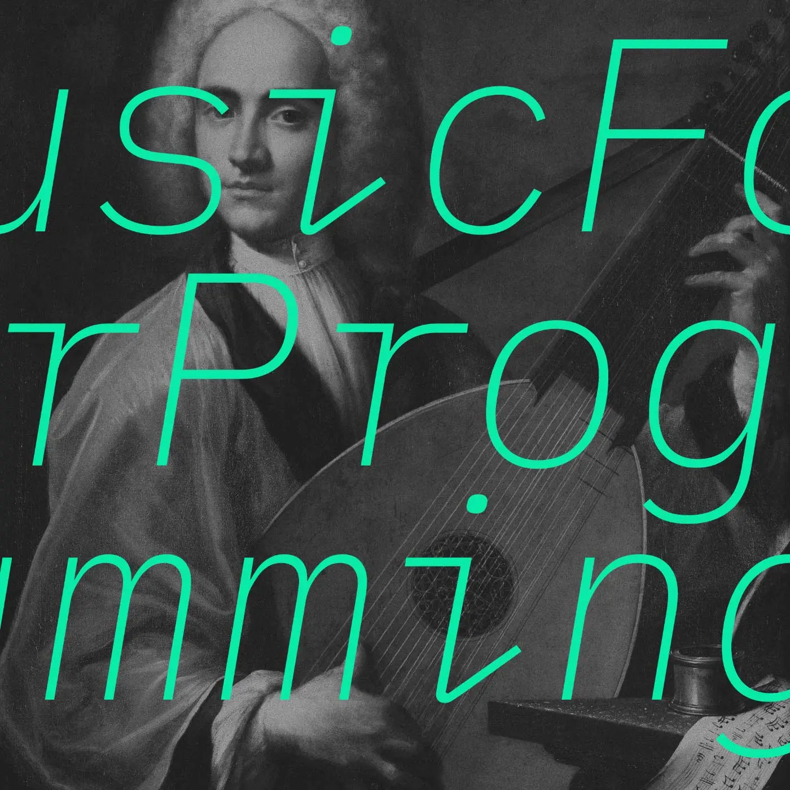

Album#49
Music For Programming


专辑信息
- 专辑名称： Music For Programming
- 歌手： Datassette
- 年份： 自 2009 年
- 时长： 很長

function musicFor(task = 'programing') {
return `A series of mixes intended for listening while ${task} to focus the brain and inspire the mind.`;
}
經過多年反覆嘗試——在不同的電台串流之間跳來跳去、將整個曲庫設為隨機播放，或把某些曲目一遍又一遍地重播——我們發現，最能讓人持續專注的音樂，往往包含以下元素：
噪音
持續音
琶音
氛圍
田野錄音
非節奏紋理
朦朧感（入睡前幻覺）
微分音／不協和音
細節／精緻感／模式
壯麗／令人敬畏／不祥
浩瀚／超脫／冥想
具備上述特質的音樂，能提供恰到好處的認知負荷，讓心智中原本可能漫無目的遊走、導致分心的部分投入其中。
這個系列的目的，不是把音樂當成可有可無、聽眾大多置之不理或充耳不聞的背景噪音；恰恰相反——我們想呈現的是能將聽者包圍其中的音樂，精心挑選出即使只以餘光般的注意力聆聽，也能充分欣賞（甚至因此更添韻味）的作品。
全心投入自己的創作或邏輯挑戰，同時也完全隨著他人音樂構想的情感軌跡前行，這樣的體驗可能與冥想頗為相似——但你不是專注於空無的簡單，並揮開內省式的白日夢；相反地，你會被足夠複雜的音樂包圍，讓那些內省式的白日夢在重返大氣層時燃燒殆盡。
你的體驗可能不同／實際感受因人而異。
忘了是在哪裡知道 Music For Programming 的了，一開始大概是被網站的配色和加載效果吸引，好奇地點開了几首曲目聴了聴，聴起來像是噪音，有的還會給人一種不祥的感覺，聴不來。
後來是看到了上面的介紹，好奇真的會有那種像是冥想一樣的體驗嗎？於是就隨便點開了一首當背景音樂，然後就去做自己的事了。那麼，真的有神奇的體驗嗎？我說不上來，但至少它對我來說是很不錯的氛圍、背景音樂，它不會給我什麼干擾，有時我甚至會忘了它的存在，偶尔的一些噪音、不和協的聲音、好聴的一小段旋律，又會讓我想起它的存在。如果你需要一些適合在學習、工作等狀態下聴的音樂，Music For Programming 是很不錯的。
所有的曲目裡，我最喜歡的是 Episode 56: Forest Drive West，其它曲目也有我喜歡的，但聴的時候我都忘了看名字，所以我說不上來是哪首。
Music For Programming 還在更新，你可以通過 RSS 去訂閱更新。
如果你喜歡裡面的音樂，可以查看曲目清單，考慮 支持那些音樂人。
在 Music For Programming 的網頁上聴很方便，也有好看的動效，但如果你傾向於下載下來聴，你可點擊曲目標題下的 [source] 去下載；如果你想全部下載下來，寫個脚本也能很容易實現，但目前 79 首曲目加起來有 10G 以上，或許你并不需要。